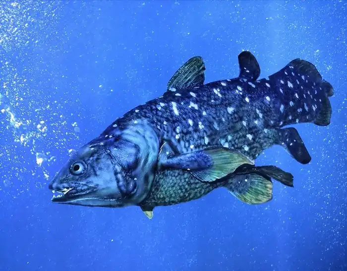
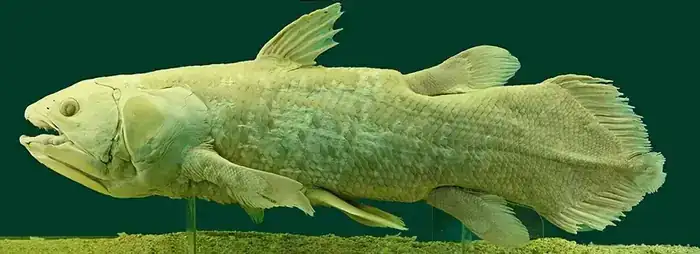
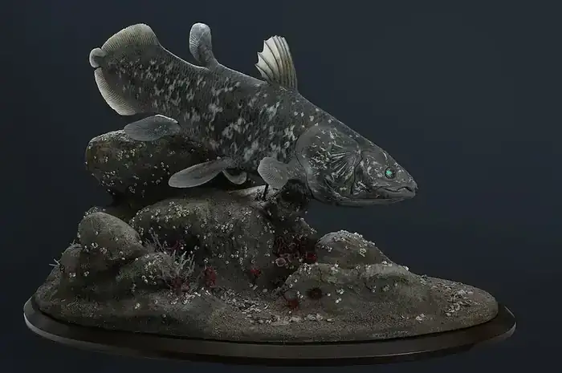

The discovery
In December 1938 a fisherman caught an unusual fish off the Chalumna River in South Africa. Marjorie Courtenay-Latimer, a museum curator, recognised it as a coelacanth — a group known from fossils and believed to have died out at the end of the Cretaceous, about 66 million years ago.
Maps, diagrams and images






The aftermath
A second specimen was caught in 1952 near the Comoros, and a distinct population was found in Indonesia in 1997, which was recognised as a separate species. Coelacanths are deep-water fish, which explains how they escaped notice.
The 'living fossil' label is misleading: coelacanths have evolved since the Cretaceous, and the group is not unchanged. But the discovery is a genuine case of a lineage surviving a mass extinction.
Documented: the 1938 specimen and its identification.
Documented: the Comoros population and the Indonesian species.
Documented: their deep-water habitat.
Overstated: the 'unchanged for 65 million years' framing.
The label: documented.
Why it is in the archive
Because it is the classic case of an absence of evidence being mistaken for evidence of absence, and because it happened to a professional rather than a crank.
Open resources on this topic
- BookSearch for a Living Fossil ;: The story of the coelacanth / by Eleanor Clymer ; Ill. by Jerry Robinson — Eleanor Lowenton Clymer · 1972 (Internet Archive, free to read)
- BookA fish caught in time : the search for the coelacanth — Weinberg, Samantha, 1966- · 2000 (Internet Archive, free to read)
- BookSmithiana: An updated inventory of all known specimens of the coelacanth, Latineria spp. Volume 3. September 2 — South African Institute for Aquatic Biodiversity · 2011 (Internet Archive, free to read)
- PapersOpen-access articles: DOAJ · PubMed Central · Internet Archive Scholar
- BooksPublic-domain and borrowable copies: Open Library · Project Gutenberg · Google Books
Cite this page
Momin, S. (2026). The Coelacanth. The Larger World Archive. https://drsamonline.github.io/LARGE_GLOBE/coelacanth.htmlMomin, Sohil. “The Coelacanth.” The Larger World Archive, 2026, https://drsamonline.github.io/LARGE_GLOBE/coelacanth.html.Momin, Sohil. “The Coelacanth.” The Larger World Archive, 2026. https://drsamonline.github.io/LARGE_GLOBE/coelacanth.html.@misc{the2026coelacanth,
author = {Momin, Sohil},
title = {The Coelacanth},
year = {2026},
howpublished = {The Larger World Archive},
url = {https://drsamonline.github.io/LARGE_GLOBE/coelacanth.html},
note = {Last reviewed 20 November 2026}
}Last reviewed 20 November 2026 · Corrections policy · this page is not peer reviewed
Sources for this page
- Wikipedia, “Coelacanth” — the fish and the discoveryen.wikipedia.org
- Wikipedia, “Marjorie Courtenay-Latimer” — the curatoren.wikipedia.org
- Wikipedia, “Lazarus taxon” — the categoryen.wikipedia.org
- Wikipedia, “Living fossil” — the contested termen.wikipedia.org